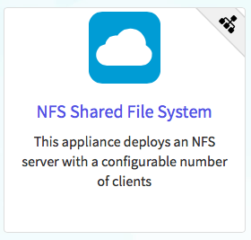
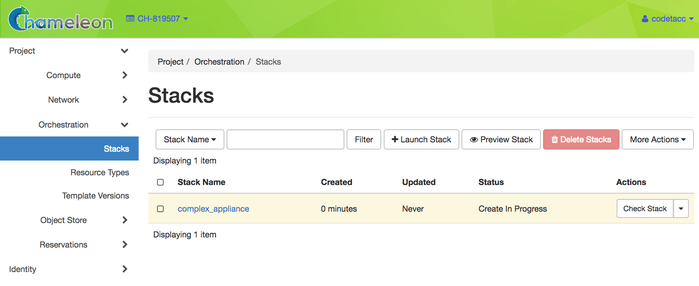

Deploying an MPI cluster, an OpenStack installation, or any other type of cluster in which nodes can take on multiple roles can be complex: you have to provision potentially hundreds of nodes, configure them to take on various roles, and make them share information that is generated or assigned only at deployment time, such as hostnames, IP addresses, or security keys. When you want to run a different experiment later you have to redo all this work. When you want to reproduce the experiment, or allow somebody else to reproduce it, you have to take very precise notes and pay great attention to their execution.
To help solve this problem and facilitate reproducibility and sharing, the Chameleon team configured a tool that allows you to deploy complex clusters with “one click”. This tool requires not just a simple image (i.e., appliance) but also a document, called a template, that contains the information needed to orchestrate the deployment and configuration of such clusters. We call this image + template combination Complex Appliances because it consists of more than just the image (i.e., appliance).
In a nutshell, Complex Appliances allow you to specify not only what image you want to deploy but also on how many nodes you want to deploy that image, what roles the deployed instances should boot into (such as e.g., head node and worker node in a cluster), what information from a specific instance should be passed to another instance in that Complex Appliance, and what scripts should be executed on boot so that this information is properly used for configuring the “one click” cluster.
This guide will tell you all you need to know in order to use and configure Complex Appliances on Chameleon.
Hint
Since Complex Appliances in Chameleon are currently implemented using the OpenStack Heat orchestration service, we will be using OpenStack terminology and features to work with them. The templates described above are YAML files using the Heat Orchestration Template (HOT) format (Heat also supports the AWS CloudFormation template format, but this is not covered here). A deployed complex appliance is referred to as a “stack” – just as a deployed single appliance is typically referred to as an “instance”.
The Chameleon Appliance Catalog has several Complex Appliances for popular technologies that people want to deploy such as OpenStack or MPI or even more advanced deployments such as efficient SR-IOV enabled MPI in KVM virtual machines. We also provide common building blocks for cluster architectures, such as an NFS share. Complex Appliances are identified by a badge in their top-right corner representing a group of machines, as in the screenshot below:

A Complex Appliance with a badge in the upper right
To view the details of a Complex Appliance, simply click on it.
You may download the Template file or copy the Template file URL to clipboard by clicking the Get Template button. The Template file or it’s URL is required when launching a Complex Appliance.
Before launching a Complex Appliance, please make sure that you have a reservation for the appropriate node types and a key pair configured. Since most Complex Appliances will consist of multiple nodes, make sure you have set the Minimum Number of Hosts in your Lease. You will also need a Template file or the URL for a Template file from the Appliance Catalog. At CHI@TACC site or CHI@UC site, go to Project > Orchestration > Stacks use the navigation side bar.
To launch a stack, click the Launch Stack button in the upper right of the Stacks page. Then follow the steps:
Start setting up a Template by choosing a Template Source in the dropdown. You may either select the File option as Template Source and upload the Template file, or select the URL option and provide the URL of the Template file.
Choose a name for your stack. Ignore the “Creation Timeout” and “Rollback On Failure” settings. You also need to enter your Chameleon password. Then, you need to select a value for the parameters of the template. Finally, click the Launch button.
Your stack should be in status “Create In Progress” for several minutes while it first launches the server instance, followed by the client instances. It will then move to the status “Create Complete”.

A Complex Appliance with the Create in Progress status
To monitor and get more details about your Complex Appliance, click on it in the Stacks page.
The Topology tab displays a topology graph of the stack. The rack of machine represents the client instance group. The server’s floating IP (the public IP assigned to a resource) is represented by an IP in a circle; while an IP in a circle is also used to represent the association of the IP with the server instance (not the greatest idea to use the same symbol for both the IP and the association – we agree but can’t do much about it at the moment). Blow off some steam by dragging the visualization across the screen, it can be rather fun!
Note
Blinking nodes indicates that they are still provisioning.
The Overview tab displays various parameters, including the ID of the stack and Outputs such as IP addresses assigned to each node. If you have a floating IP associated to the server, you can now ssh to the server using the floating IP just as you do with regular instances. The client may not have a floating IP attached to it, but you can connect to it via the server node with the client’s private IP.
Tip
To talk to the client without an associated floating IP, connect to the server with ssh-A to enable the SSH agent forwarding after loading your key to your SSH agent with ssh-add<path-to-your-key>.
Under the Resources tab you will see the resources of the stack (the server, clients, server’s public/floating IP, and its the association) and information about them.
To delete a Complex Appliance, select it in the Stacks page and click the Delete Stacks button. This will delete all resources of the stack, such as nodes and floating IP addresses.
In addition to Installing the CLI, you will need to install the python-heatclient package using the command:
pipinstallpython-heatclient
Then, set up your environment for OpenStack command line usage, as described in The OpenStack RC Script. You can get a list of your Complex Appliances in your project using the command:
Provide the path to and the name of the Template file in your local file system via the template switch. The <stack_name> is the name of the Complex Appliance. In addition, you may provide the parameters required in the Template file with their values by parameter switch. For example, the NFS Server Template lists the following parameters section:
An NFS server instance, that exports the directory /exports/example to any instance running on Chameleon bare metal,
One or several NFS client instances, which configure /etc/fstab to mount this NFS share to /mnt (and can subsequently read from and write to it).
This template is reproduced further below, and includes inline comments starting with the # character. There are three main sections:
resources
parameters
outputs
The resources section is the most important part of the template: it defines which OpenStack Resources to create and configure. Inside this section you can see four resources defined:
nfs_server_floating_ip: creates a Floating IP on the ext-net public network. It is not attached to any instance yet.
nfs_server: creates the NFS server instance (an instance is defined with the type OS::Nova::Server in Heat). It is a bare metal instance (flavor:baremetal) using the CC-CentOS7 image and connected to the private network named sharednet1. We set the key pair to use the value of the parameter defined earlier, using the get_param function. Similarly, the reservation to use is passed to the scheduler. Finally, a user_data script is given to the instance, which configures it as an NFS server exporting /exports/example to Chameleon instances.
nfs_server_ip_association: associates the floating IP created earlier with the NFS server instance.
nfs_clients: defines a resource group containing instance configured to be NFS clients and mount the directory exported by the NFS server defined earlier. The IP of the NFS server is gathered using the get_attr function, and placed into user_data using the str_replace function.
Once a Resource has been specified, you may provide it as a value for another Resource’s property using the get_resource function.
The parameters section defines inputs to be used on Complex Appliance launch. Parameters all have the same data structure: each one has a name (key_name or reservation_id in this case), a data type (number or string), a comment field called description, optionally a defaultvalue, and a list of constraints (in this case only one per parameter). Constraints tell Heat to match a parameter to a specific type of OpenStack resource. Complex appliances on Chameleon require users to customize at least the key pair name and reservation ID, and will generally provide additional parameters to customize other properties of the cluster, such as its size, as in this example. The values of Parameters can be used in the resources section using the get_param function.
The outputs section defines what values are returned to the user. Outputs are declared similarly to Parameters: they each have a name, an optional description, and a value. They allow to return information from the stack to the user. You may use the get_attr function to retrieve a resource’s attribute for output.
Customizing an existing template is a good way to start developing your own. We will use a simpler template than the previous example to start with: it is the Hello World complex appliance.
First, delete the stack you launched, because we will need all three nodes to be free. To do this, go back to the Project > Orchestration > Stacks page, select your stack, and then click on the Delete Stacks button. You will be asked to confirm, so click on the Delete Stacks button.
The template for the Hello World complex appliance is reproduced below. It is similar to the NFS share appliance, except that it deploys only a single client. You can see that it has four resources defined:
nfs_server_floating_ip
nfs_server
nfs_server_ip_association
nfs_client
The nfs_client instance mounts the NFS directory shared by the nfs_server instance, just like in our earlier example.
# This describes what is deployed by this template.
description: NFS server and client deployed with Heat on Chameleon
# This defines the minimum Heat version required by this template.
heat_template_version: 2015-10-15
# The resources section defines what OpenStack resources are to be deployed and
# how they should be configured.
resources:
nfs_server_floating_ip:
type: OS::Nova::FloatingIP
properties:
pool: ext-net
nfs_server:
type: OS::Nova::Server
properties:
flavor: baremetal
image: CC-CentOS7
key_name: { get_param: key_name }
networks:
- network: sharednet1
scheduler_hints: { reservation: { get_param: reservation_id } }
user_data: |
#!/bin/bash
yum install -y nfs-utils
mkdir -p /exports/example
chown -R cc:cc /exports
echo '/exports/example 10.140.80.0/22(rw,async) 10.40.0.0/23(rw,async)' >> /etc/exports
systemctl enable rpcbind && systemctl start rpcbind
systemctl enable nfs-server && systemctl start nfs-server
nfs_server_ip_association:
type: OS::Neutron::FloatingIPAssociation
properties:
floatingip_id: {get_resource: nfs_server_floating_ip}
port_id: {get_attr: [nfs_server, addresses, sharednet1, 0, port]}
nfs_client:
type: OS::Nova::Server
properties:
flavor: baremetal
image: CC-CentOS7
key_name: { get_param: key_name }
networks:
- network: sharednet1
scheduler_hints: { reservation: { get_param: reservation_id } }
user_data:
str_replace:
template: |
#!/bin/bash
yum install -y nfs-utils
echo "$nfs_server_ip:/exports/example /mnt/ nfs" > /etc/fstab
mount -a
params:
$nfs_server_ip: { get_attr: [nfs_server, first_address] }
# The parameters section gathers configuration from the user.
parameters:
key_name:
type: string
description: Name of a KeyPair to enable SSH access to the instance
default: default
constraints:
- custom_constraint: nova.keypair
reservation_id:
type: string
description: ID of the Blazar reservation to use for launching instances.
constraints:
- custom_constraint: blazar.reservation
Download this template to your local machine, and open it in your favorite text editor.
We will customize the template to add a second NFS client by creating a new resource called another_nfs_client. Add the following text to your template inside the resources section. Make sure to respect the level of indentation, which is important in YAML.
Now, launch a new stack with this template. Since the customized template is only on your computer and cannot be addressed by a URL, use the Direct Input method instead and copy/paste the content of the customized template. The resulting topology view is shown below: as you can see, the two client instances are shown separately since each one is defined as a separate resource in the template.
You may have realized already that while adding just one additional client instance was easy, launching more of them would require to copy / paste blocks of YAML many times while ensuring that the total count is correct. This would be easy to get wrong, especially when dealing with tens or hundreds of instances.
So instead, we leverage another construct from Heat: resource groups. Resource groups allow to define one kind of resource and request it to be created any number of times.
Remove the nfs_client and another_client resources from your customized template, and replace them with the following:
A resource group is configured with a properties field, containing the definition of the resource to launch (resource_def) and the number of resources to launch (count). Once launched, you will notice that the topology view groups all client instances under a single Resource Group icon. We use the same resource_def than when defining separate instances earlier.
Another way we can customize this template is by adding outputs to the template. Outputs allow a Heat template to return data to the user. This can be useful to return values like IP addresses or credentials that the user must know to use the system.
We will create an output returning the floating IP address used by the NFS server. We define an outputs section, and one output with the name server_ip and a description. The value of the output is gathered using the get_attr function which obtains the IP address of the server instance.
You can get outputs in the Overview tab of the Stack Details page. If you want to use the command line, install python-heatclient and use the heatoutput-list and heatoutput-show commands, or get a full list in the information returned by heatstack-show.
Multiple outputs can be defined in the outputs section. Each of them needs to have a unique name. For example, we can add another output to list the private IPs assigned to client instances:
Finally, we can add a new parameter to replace the hard-coded number of client instances by a value passed to the template. Add the following text to the parameters section:
Inside the resource group definition, change count:2 to count:{get_param:nfs_client_count} to retrieve and use the parameter we just defined. When you launch this template, you will see that an additional parameter allows you to define the number of client instances, like in the NFS share appliance.
At this stage, we have fully recreated the NFS share appliance starting from the Hello World one! The next section will explain how to write a new template from scratch.
You may want to write a whole new template, rather than customizing an existing one. Each template should follow the same layout and be composed of the following sections:
Each Heat template has to include the heat_template_version key with a valid version of HOT (Heat Orchestration Template). Chameleon bare metal supports any HOT version up to 2015-10-15, which corresponds to OpenStack Liberty.
The Heat documentation lists all available versions and their features. We recommended that you always use the latest Chameleon supported version to have access to all supported features:
However, only a subset of them are supported by Chameleon, and some are limited to administrative use. We recommend that you only use:
OS::Glance::Image
OS::Heat::ResourceGroup
OS::Heat::SoftwareConfig
OS::Heat::SoftwareDeployment
OS::Heat::SoftwareDeploymentGroup
OS::Neutron::FloatingIP
OS::Neutron::FloatingIPAssociation
OS::Neutron::Port (advanced users only)
OS::Nova::Keypair
OS::Nova::Server
If you know of another resource that you would like to use and think it should be supported by the OpenStack services on Chameleon bare metal, please let us know via our Help Desk.
Parameters allow users to customize the template with necessary or optional values.
For example, they can customize which Chameleon appliance they want to deploy, or which key pair to install.
Default values can be provided with the default key, as well as constraints to ensure that only valid OpenStack resources can be selected.
For example, custom_constraint:glance.image restricts the image selection to an available OpenStack image, while providing a pre-filled selection box in the web interface.
More details about constraints are available in the Heat documentation.
Outputs allow template to give information from the deployment to users. This can include usernames, passwords, IP addresses, hostnames, paths, etc. The outputs declaration is using the following format:
Generally values will be calls to get_attr, get_param, or some other function to get information from parameters or resources deployed by the
template and return them in the proper format to the user.
Chameleon’s reservation service allows users to reserve VLAN segments and floating ips. In order to make use of these
reserved resources in a (HOT) template, follow the guidelines below. For more information on VLAN and floating ip reservations,
see documentaiton on Creating a Lease to Reserve a VLAN Segment and Creating a Lease to Reserve Floating IPs
When you reserve a VLAN segment via blazar, it will automatically create a network for you. However, this network
is not usable in your template unless a subnet and router have been associated with the network. Once this is done, you can simply
add the network name as the network parameter for your server as you would sharednet1. The below cli commands
provides an example of how to complete the setup for your reserved network.
For reserved floating ips, you need to associate the floating ip with a server using the OS::Neutron::FloatingIPAssociation object type.
Many of our older complex appliance templates use the OS::Nova::FloatingIPAssociation object, but this has since been deprecated. See example below
for proper usage:
If you are having trouble finding the uuid of the floating ip address then the below command will help you.
openstackfloatingiplist-cID-c"Floating IP Address"-cTags--long
The output should look like the sample output below with the uuid listed under the ID column. You can check your lease in
the reservation section of the GUI to find the reservation id associated with the floating ip in the Tags section of the output.
If you have written your own Complex Appliance or substantially customized an existing one, we would love if you shared them with our user community! The process is very similar to regular appliances: log into the Chameleon portal, go to the appliance catalog, and click on the button in the top-right corner: Add an appliance (you need to be logged in to see it).
You will be prompted to enter a name, description, and documentation. Instead of providing appliance IDs, copy your template to the dedicated field. Finally, share your contact information and assign a version string to your appliance. Once submitted, your appliance will be reviewed. We will get in touch if a change is needed, but if it’s all good we will publish it right away!
The previous examples have all used user_data scripts to provide instances with contextualization information. While it is easy to use, this contextualization method has a major drawback: because it is given to the instance as part of its launch request, it cannot use any context information that is not yet known at this time. In practice, this means that in a client-server deployment, only one of these pattern will be possible:
The server has to be deployed first, and once it is deployed, the clients can be launched and contextualized with information from the server. The server won’t know about the clients unless there is a mechanism (not managed by Heat) for the client to contact the server.
The clients have to be deployed first, and once they are deployed, the server can be launched and contextualized with information from the clients. The clients won’t know about the server unless there is a mechanism (not managed by Heat) for the server to contact the clients.
This limitation was already apparent in our NFS share appliance: this is why the server instance exports the file system to all bare metal instances on Chameleon, because it doesn’t know which specific IP addresses are allocated to the clients.
This limitation is even more important if the deployment is not hierarchical, i.e. all instances need to know about all others. For example, a cluster with IP and hostnames populated in /etc/hosts required each instance to be known by every other instance.
This section presents a more advanced form of contextualization that can perform this kind of information exchange.
This is implemented by Heat agents running inside instances and communicating with the Heat service to send and receive information.
This means you will need to use an image bundling these agents.
Currently, all Chameleon-supported images (CC) are supporting this mode of contextualization.
If you build your own images using the CC-CentOS7 builder, CC-CentOS builder or CC-Ubuntu builder, you will automatically have these agents installed. This contextualization is performed with several Heat resources:
OS::Heat::SoftwareConfig: This resource describes code to run on an instance. It can be configured with inputs and provide outputs.
OS::Heat::SoftwareDeployment: This resource applies a SoftwareConfig to a specific instance.
OS::Heat::SoftwareDeploymentGroup: This resource applies a SoftwareConfig to a specific group of instances.
The template below illustrates how it works. It launches a group of instances that will automatically populates their /etc/hosts file with IP and hostnames from other instances in the deployment.
The first SoftwareConfig, export_hosts, uses the facter tool to extract IP address and hostname into a single line (in the format expected for /etc/hosts) and writes it to a special path (${heat_outputs_path}.hosts). This prompts Heat to assign the content of this file to the output with the name hosts.
The second SoftwareConfig, populate_hosts, takes as input a variable named hosts, and applies a script that reads the variable from the environment, parses it with ast.literal_eval (as it is formatted as a Python dict), and writes each value of the dictionary to /etc/hosts.
The SoftwareDeploymentGroup resources export_hosts_sdg and populate_hosts_sdg apply each SoftwareConfig to the instance ResourceGroup with the correct configuration.
Finally, the instance ResourceGroup is configured so that each instance uses the following contextualization method instead of a user_data script:
On Chameleon you can configure a Heat Stack to launch as soon as your lease begins. Whether your experiments require a large cluster or a single node, automated deployment saves you time configuring your environment and even allows you to run your entire experiment automatically when the necessary resources become available.
At present, you will need to use our customized versions of the Heat and Blazar CLI tools to implement this feature.
Next you will need to configure a Heat stack with the --initialize flag on the CLI and a dummy reservation_id parameter. The dummy id can be anything (even an empty string) so long as the reservation_id parameter is specified so that Blazar can overwrite it once your advanced reservation is scheduled and the stack is ready to launch. Once your stack is initialized, the status should read INIT_COMPLETE. This indicates that your template was validated and all the data required to launch a stack has been stored. See example command below:
Finally, for a stack to launch when your reservation begins, we need to let Blazar know which stack to notify Heat to update. This is done via the command line by specifying orchestration as an on_start action with a stack_id (e.g. on_start=orchestration:<stack_id>) under the --reservation flag. Under the hood, Blazar will update your initialized Heat stack with the reservation_id assigned to the lease. See example below: